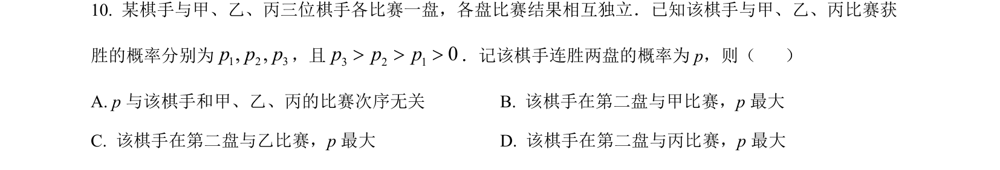
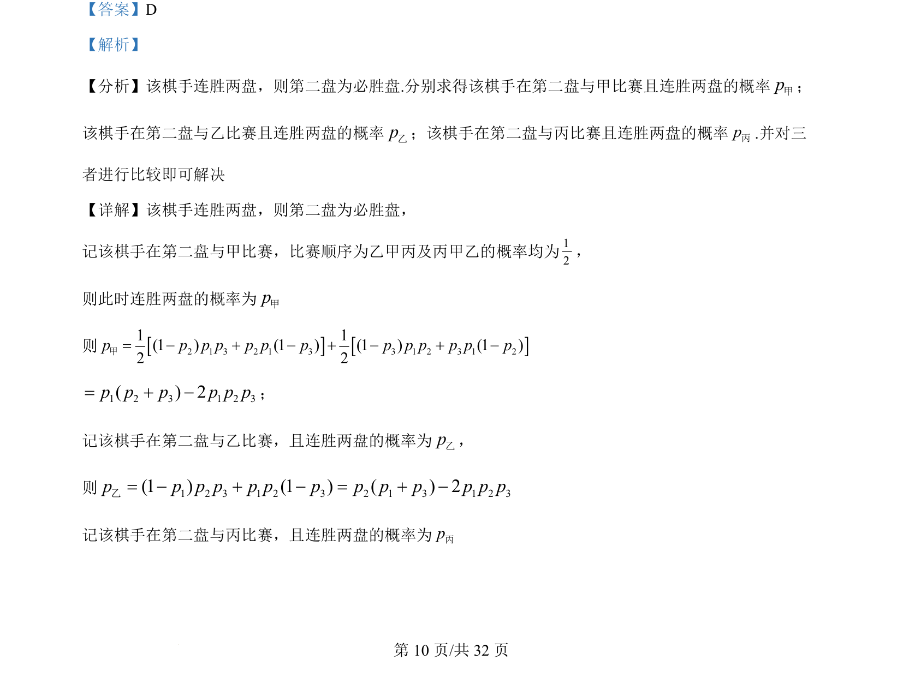
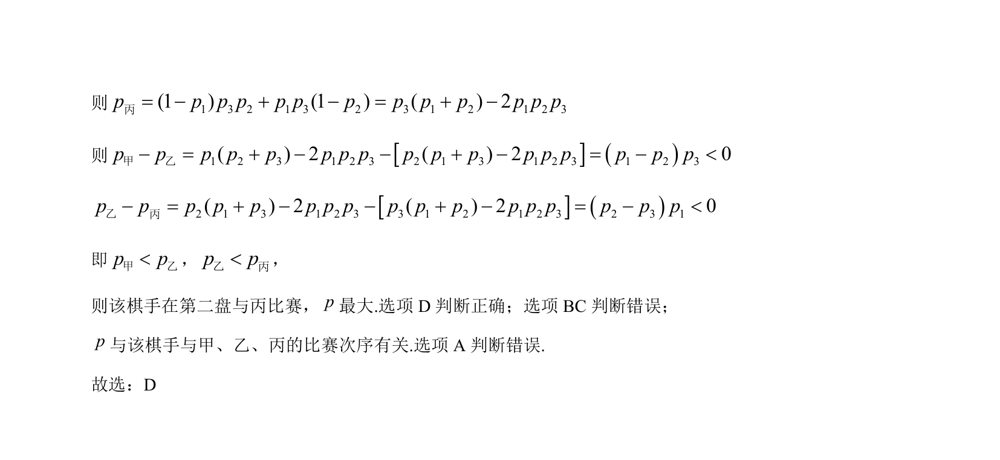

考点：概率计算 分类讨论 比较大小

本题通过计算棋手在不同对手组合下连胜两盘的概率，比较概率大小以确定最优比赛顺序。


📄 原 PDF 第 10 页：
素材/真题/吉林/2008-2024·（吉林）数学高考真题/2022年高考数学试卷（理）（全国乙卷）（解析卷）.pdf
【答案】D 【解析】 【分析】该棋手连胜两盘，则第二盘为必胜盘.分别求得该棋手在第二盘与甲比赛且连胜两盘的概率p甲； 该棋手在第二盘与乙比赛且连胜两盘的概率p乙；该棋手在第二盘与丙比赛且连胜两盘的概率p丙.并对三 者进行比较即可解决 【详解】该棋手连胜两盘，则第二盘为必胜盘， 记该棋手在第二盘与甲比赛，比赛顺序为乙甲丙及丙甲乙的概率均为12， 则此时连胜两盘的概率为p甲 则[][]2 1 3 2 1 3 3 1 2 3 1 21 1(1 ) (1 ) (1 ) (1 )2 2p p p p p p p p p p p p p= - + - + - + -甲1 2 3 1 2 3( ) 2p p p p p p= + -； 记该棋手在第二盘与乙比赛，且连胜两盘的概率为p乙， 则 1 2 3 1 2 3 2 1 3 1 2 3(1 ) (1 ) ( ) 2p p p p p p p p p p p p p= - + - = + -乙 记该棋手在第二盘与丙比赛，且连胜两盘的概率为p丙